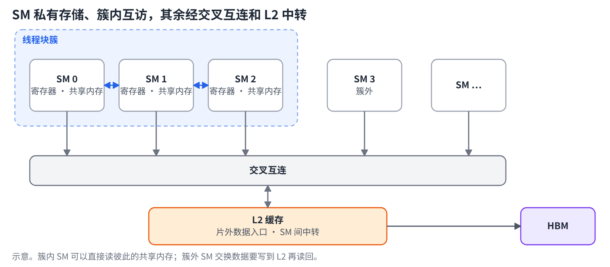
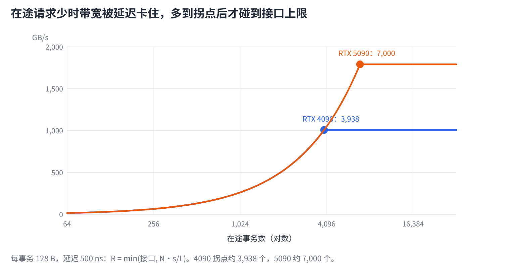
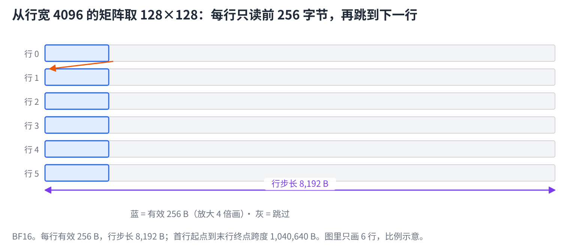
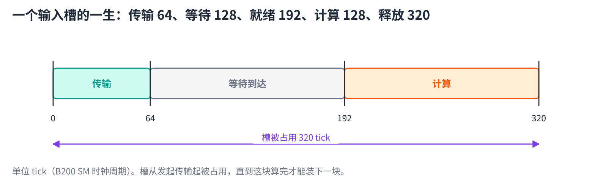
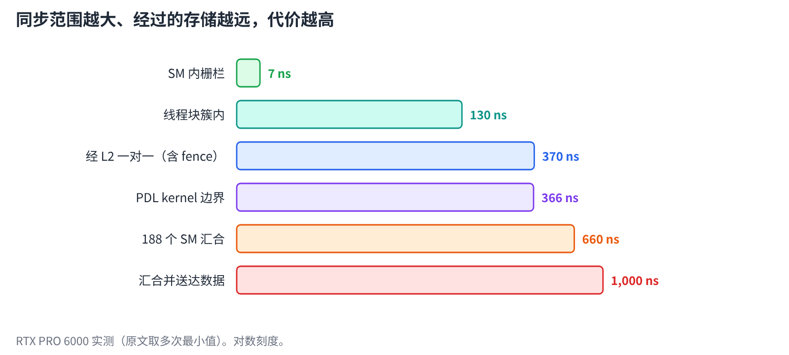
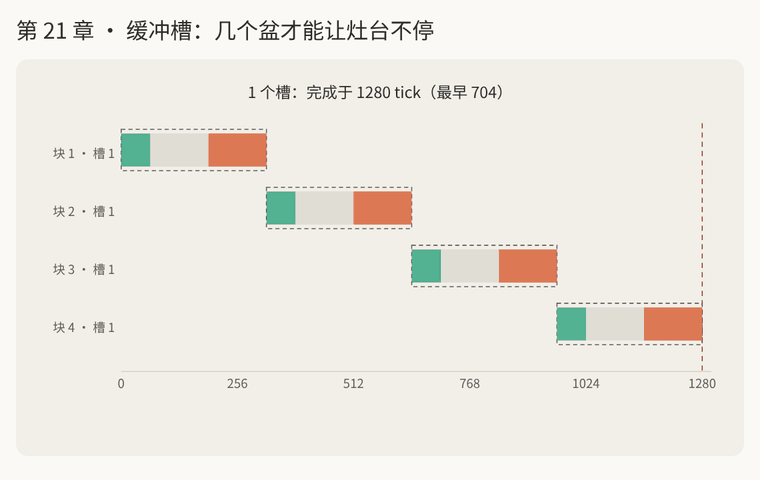

第 21 章 · 存储层次与数据搬移：放得下、取得到、来得及
本地运行
git clone https://github.com/wikieden/ai-infra-from-constraints
cd ai-infra-from-constraints/code/notebooks
pip install jupyterlab torch numpy
jupyter lab ch21_memory_movement.ipynb也可以下载后直接用 VS Code 打开 .ipynb 运行。需要 GPU 的章节在 Colab 里选「代码执行程序 → 更改运行时类型 → GPU」。
本章回答：片上缓冲为什么总是不够用？同一份数据为什么要分"大小、请求量、接口流量"三个数？带宽翻倍为什么读 KV 不一定变快？双缓冲和多个缓冲槽各省多少时间？矩阵单元和向量单元之间、SM 和 SM 之间交接数据要付出什么？
讲解日期：2026-11-24 · 上一章：第 20 章 计算单元 · 下一章：第 22 章 多芯片封装与互联
对应原文：materials/ai-infra-book/manuscripts/04-加速器架构.md§4.3–§4.4 L371–L649（例 4-2、图 4-13 到 4-25）
本章缩写：DMA = Direct Memory Access（直接 / 内存 / 访问）· GDDR = Graphics DDR（图形 / 双倍数据速率内存）· GPC = Graphics Processing Cluster（图形 / 处理 / 簇）· L2 = Level 2 cache（二级缓存）· NDDMA = N-Dimensional DMA（多维 / 直接内存访问，昇腾）· PDL = Programmatic Dependent Launch（程序化 / 依赖 / 启动）· SM = Streaming Multiprocessor（流式 / 多处理器）· TMA = Tensor Memory Accelerator（张量 / 内存 / 加速器）。全部缩写见 缩写与术语表
第 03 章用"大楼厕所"讲了存储层次是什么。本章算账：每一级放得下多少，数据从哪一级取得到，下一块能不能来得及在用之前到达。
讲解
第一步：片上缓冲：一块计算要多大的工作台（2026-11-24）
类比：木工的工作台。 台面上要同时放两块待拼的木板（输入、权重）和正在拼的成品（部分和）；还想提前把下一对木板备好，台面就得更大。
例子（原文 L421–L423）：\(m = n = 128\)、\(k = 64\) 的乘加块。
| 内容 | 大小 |
|---|---|
| BF16 输入块 + 权重块 | 16 + 16 = 32 KiB |
| FP32 累加器 \(128 \times 128 \times 4\) | 64 KiB |
| 一套合计 | 96 KiB（V100 每 SM 最多配 96 KiB 共享内存，刚好用满） |
| 再备一对操作数（双缓冲） | \(2 \times 32 + 64 = 128\) KiB |
累加器放进独立存储，同样的 96 KiB 就能放三对输入（Blackwell 的专用累加存储，第 23 章）。
驻留组数（原文 L435–L437）：SM120（RTX 5090 / RTX PRO 6000）每 SM 最多 100 KB 共享内存：每组 32 KiB 可驻留 3 组，每组 64 KiB 只能 1 组。组少了，一组等数据时没有别的组顶上，计算单元更容易闲。每 SM 共享内存上限：A100 164 KB，H100 228 KB。
三个量要分开（原文 L425–L427）：四个输出块都读同一份 32 KiB 输入。
| 量 | 值 |
|---|---|
| 数据本身 | 32 KiB |
| 各块发出的请求 | 128 KiB |
| 片外实际传输（L2 命中后三次） | 32 KiB；但 L2 仍要供出 128 KiB |
用 L2 请求量算的算术强度配 L2 带宽，用 DRAM 流量算的配片外带宽。
L2 的位置（原文 L429）：L2 分成多个分片，经交叉互连连到全部 SM；寄存器、共享内存、L1 都是各 SM 私有。Hopper 起同一 GPC 内几个 SM 可组成线程块簇，簇内能互读共享内存；除此之外，SM 之间交换数据只能经过 L2。RTX PRO 6000：188 个 SM，L2 128 MiB。

图 21-1 · L2 既是片外数据进芯片的入口，也是簇以外 SM 交换数据的唯一途径（第五步算它的代价）。
一句话：块越大复用越多，但工作台要放下两块操作数加部分和；同一份数据要分开算大小、请求量和各级接口的实际流量。
第二步：容量、带宽、延迟：读 KV 为什么不一定随带宽变快（2026-11-24）
类比：餐厅传菜。 厨房出菜速度（接口带宽）再快，如果只有 4 个服务员（在途请求），每人送一趟要 5 分钟（延迟），每分钟最多也就送出 0.8 盘。
容量与带宽各管一段（原文 L443–L445）：Qwen3-235B-A22B 4-bit，权重 + scale 约 123.1 GB，8 条 8K 请求 KV 约 12.6 GB，工作区 2 GiB，共约 137.9 GB：H100（80 GB）差约 58 GB，H200（141 GB）余约 3.1 GB。每步访问：专家分散约 75.967 GB，集中约 24.737 GB；H200 上 15.8 / 5.2 ms，B200 上 9.5 / 3.1 ms。专家复用改的是 \(V\)，换卡改的是 \(R\)，作用在 \(T = V/R\) 的不同位置。
公式：Little 定律（原文 L454–L460）：最多 \(N_o\) 个在途事务，每个带回 \(s\) 字节，平均延迟 \(L\)：
下一地址依赖上一次读取结果时，队列再深也填不满；独立的计算块才能提供互不等待的读取。
例 4-2（原文 L467–L475）：读一条 8K 请求的 KV（1.125 GiB），每事务 128 B，延迟 500 ns。
| 配置 | 有效带宽 | 读取时间 |
|---|---|---|
| RTX 4090（1,008 GB/s），128 个在途事务 | ≈ 32.8 GB/s | ≈ 36.9 ms |
| RTX 4090，4,096 个（≥ 3,938 即可用满） | 1,008 GB/s | ≈ 1.20 ms |
| RTX 5090（1,792 GB/s），4,096 个 | ≈ 1.05 TB/s | ≈ 1.15 ms（只快约 4%） |
用满 1,792 GB/s 要至少 7,000 个在途事务；延迟增到 800 ns 时要 11,200 个。

图 21-2 · 两张卡的曲线在并发小时重合（受在途字节数限制）；接口带宽高的那张卡，需要更多在途请求才能用满。
L2 延迟（原文 L465）：依赖链上每次访问都要等完整延迟。RTX PRO 6000 一次 L2 往返约 340–390 个周期，约 120–135 ns。
一句话：先看容量能否驻留，再算各级流量，最后用 \(N_o s / L\) 检查在途请求能不能用满带宽；不够时换更快的接口也没用。
第三步：布局与寻址：子矩阵一行一行跳着读（2026-11-24）
类比：从一本大账本里抄一个小表格。 每一行只抄几格，抄完要翻过一大段不要的内容，到下一行同样的位置再抄。
公式（原文 L498）：
- \(s_r\)：行步长（字节）；\(s_c\)：列步长；按行连续存储时 \(s_c = b\)。
例子（原文 L503）：从 BF16、行宽 4096 的矩阵取 128 行 × 128 列：
| 量 | 值 |
|---|---|
| 有效数据 | \(128 \times 128 \times 2 = 32\) KiB |
| 每行有效 | 256 B |
| 行步长 | 8,192 B |
| 首行起点到末行终点的跨度 | \(127 \times 8192 + 256 = 1{,}040{,}640\) B |
逐行读只传有效的 256 B；相邻线程读相邻元素时还能合并成更少的事务。

图 21-3 · 行步长告诉搬移单元下一段有效数据从哪开始。
描述符（原文 L517）：搬移单元接收起点、形状、步长，自己重复生成地址（NVIDIA Hopper 的 TMA、昇腾 950 的 NDDMA）。上例用"起点、128 行、每行 256 B、行步长 8192 B"就描述完了。
分块让请求变多（原文 L513）：V4-Flash 共享专家 \([32, 4096] \times [4096, 2048]\)，FP8 输入 128 KiB；输出分 16 个 128 列的块，每块都遍历全部输入：块级输入请求 \(16 \times 128\) KiB = 2 MiB。共享缓存或同一计算组连续算多个块，才能把重复请求留在片上。
补基础：合并访问见《CUDA 从线程到 Tensor Core》第 6 章，TMA 见第 17 章。
一句话：子矩阵按步长跳着读；搬移单元用描述符生成地址，分块方式决定同一份数据被请求几次。
第四步：双缓冲与缓冲槽：下一块要在用之前到（2026-11-24）
类比：做饭时边炒这盘、边洗下一盘的菜。 只有一个盆，就得炒完再洗；有两个、三个盆，洗菜和炒菜就能重叠。盆多到一定程度，再多也没用：灶台已经一直没停过。
双缓冲（原文 L526–L529）：\(n\) 块，每块加载 \(t_l\)、计算 \(t_c\)：
8 块、加载 2 μs、计算 1 μs：串行 24 μs，流水 \(2 + 1 + 7 \times 2 = 17\) μs；计算再快一倍只降到 16.5 μs（加载仍每 2 μs 才供一块）。
几个槽才够（原文 L531–L576）：B200 一个 SM 上的 QK，沿头维度切 4 块，每块输入 16 KiB。每块传输 64 tick，再等 128 tick 才可用（发起后 192 tick 就绪），计算 128 tick；一个输入槽从发起占到算完才释放。

图 21-4 · tick 是 B200 SM 的一个时钟周期。
| 输入槽数 | 输入缓冲 | 完成时间 |
|---|---|---|
| 1 | 16 KiB | 1280 tick |
| 2 | 32 KiB | 768 tick |
| 3 | 48 KiB | 704 tick（\(= 192 + 4 \times 128\)，最早可能） |
| 4 | 64 KiB | 704 tick（不再缩短） |
矩阵速率翻倍（每块计算 64 tick）后，目标变成 \(192 + 4 \times 64 = 448\)：三个槽只能做到 512，要四个槽才行。计算变快，缓冲也要重新配。
一句话：双缓冲让加载和计算重叠，完成时间由慢的那段决定；所需槽数 = 让每块按时到达的最少槽数，计算加快后要更多槽。
第五步：交接的代价：单元之间、SM 之间（2026-11-24）
类比：接力赛交棒。 同一个队里交棒（单元之间、直接通路）很快；跨队交棒要先把棒放到中间的桌上（L2），再喊一声"放好了"（标志），对方确认后才拿，而且得保证棒真的先放好、再喊。
矩阵—向量交接（原文 L596–L610）：128 行查询分 4 组、每组 32 行，一组分数 + 概率共 24 KiB。
| 交接方式 | 行组 | 槽数 | 向量开始 | 完成 |
|---|---|---|---|---|
| 写入存储再读 | 128 | 1 | 1536 tick | 5118 tick |
| 写入存储再读 | 32 | 1 | 384 tick | 5120 tick |
| 写入存储再读 | 32 | 2 | 384 tick | 3200 tick |
| 直接传递 | 32 | 2 | 256 tick | 3008 tick |
| 直接传递 | 32 | 4 | 256 tick | 3008 tick |
分组让完整行更早算出；第二个槽让相邻组重叠（−38%）；直接传递减少交接流量（再 −6%）；更多槽不再改变最慢单元的节奏。
跨 SM 交接（原文 L628–L646）：decode 时 batch 小，矩阵—向量乘要分给全部 SM，每个 SM 只算一段，下一个算子要完整向量，只能经 L2。生产者写数据 → fence（等 L2 确认写完）→ 写标志；消费者轮询到标志后再读数据（释放 / 获取语义）。
| 同步范围（RTX PRO 6000） | 一次约多久 |
|---|---|
| SM 内栅栏 | 约 7 ns |
| 线程块簇内 | 约 130 ns |
| 经 L2 一对一交接（含 fence） | 约 370 ns（去掉 fence 约 140 ns，但不保证正确） |
| PDL 的 kernel 边界 | 约 366 ns |
| 全部 188 个 SM 汇合 | 约 660 ns |
| 全部 SM 汇合并送达数据 | 约 1.0 μs |

图 21-5 · 对数刻度。CUDA Graph、persistent kernel 能消掉主机提交的开销，但消不掉依赖本身需要的 L2 往返（原书第 5 章）。
场景代码：CUDA 里跨 SM 交接的标准写法：生产者先写数据、再 __threadfence()、再写标志（简化版）：
// 生产者 SM
out[idx] = partial; // 1. 写数据（可能落在另一个 L2 分片）
__threadfence(); // 2. fence：等 L2 确认之前的写入都完成
if (threadIdx.x == 0) atomicExch(&flag, 1); // 3. 再写标志
// 消费者 SM
while (atomicAdd(&flag, 0) == 0) {} // 轮询标志
__threadfence(); // 获取：之后的读取不能提前
float v = out[idx]; // 4. 读数据
一句话：直接通路和多个槽减少单元间交接的等待；跨 SM 只能经 L2，一次交接数百纳秒，全 SM 汇合约 1 μs，这是依赖本身的代价。
动画演示：缓冲槽：几个盆才能让灶台不停

可交互版：animations/21-memory-movement.html（滑块：输入槽数 1–4；开关：矩阵速率 ×2）。
怎么看：
- 每行是一块数据：蓝色是传输，等待后到就绪线，绿色是计算，浅灰是槽被占用的时间（第四步）；
- 一个槽只有在这块算完以后才能接下一块；
- 播放时槽数 1 → 2 → 3 → 4：完成时间 1280 → 768 → 704 → 704；
- 打开"矩阵 ×2"：三个槽 512，四个槽才到 448。
练习与作答记录
题 1（第一步）：\(m = n = 64\)、\(k = 128\) 的乘加块，BF16 输入和权重、FP32 累加器，一套要多少 KiB？双缓冲呢？在每 SM 100 KB 共享内存里能驻留几组？
作答记录：（待作答）
题 2（第二步）：每事务 64 B、延迟 600 ns，要用满 2,000 GB/s 的接口，至少要多少个在途事务？如果只有 8,192 个，有效带宽是多少？
作答记录：（待作答）
题 3（第四步）：沿用正文参数（传输 64、等待 128、计算 128 tick），一共 6 块。一个、两个、三个槽各要多少 tick？连续计算的理论最早完成时间是多少？
作答记录：（待作答）
原书"思考"（L413：KV 降 10% 能否放下第五条请求；L580：额外等待翻倍时三个槽够不够）、实验 4-3（L485–L487）、实验 4-4（L622–L624）。想多练可以做。
口诀
工作台放两块板一块成品，备下一对还要再大；
数据、请求、流量三个数，配各自那一级的带宽；
服务员少了，厨房再快也送不出去；
小表格跳着抄，描述符替你算地址；
盆多了菜能边洗边炒，灶台不停就别再加盆；
队里交棒快，跨队先放桌上再喊话。
本章复习卡片
I78（片上缓冲的大小与驻留组数，三个量分开）、I79（Little 定律与在途事务）、I80（步长寻址与描述符）、I81（双缓冲与缓冲槽数）、I82（单元间与跨 SM 交接的代价）。练习做完后，按答错、卡住的地方再补。
附录 · 延伸阅读
留给以后深入学习用，不影响本章主线。★ 是建议先读的。
推荐阅读
| 读什么 | 读哪里 | 读它为了什么 |
|---|---|---|
| ★ AII 第 4 章 | §4.3–§4.4 L371–L649 | 本章原文，例 4-2、图 4-13 到 4-25 |
| ★ 《CUDA 从线程到 Tensor Core》第 5、6、16、17 章 | 内存层级、合并访问、异步拷贝流水、TMA 与 mbarrier | GPU 一侧怎么写 |
Mess 论文（原文 [^mess]） |
带宽—延迟曲线 | 延迟随负载上升，Little 定律的实测版 |
| AISPE 第 7、10、11 章 | 中英对照 | 内存访问模式、内核内流水、流与同步 |
AII 实验（原文 [^l2sync]） |
L2 交接与同步测量 | 370 ns、660 ns、1 μs 的测法 |
数学原理
- Little 定律：稳定系统里平均在途数 = 完成速率 × 平均延迟。
- 流水线时间：首块 \(t_l + t_c\)，之后每块 \(\max(t_l, t_c)\)。
- 步长寻址：二维视图的地址是起点加行号 × 行步长加列号 × 列步长。
公式清单
| 公式 | 意思 |
|---|---|
| \(W + BSm_{\mathrm{KV}} + M_{\mathrm{work}} \le C\) | 容量条件（第 13 章） |
| \(R_{\mathrm{eff}} \le \min(R_{\mathrm{if}}, N_o s / L)\)；\(N_o \ge \lceil R L / s \rceil\) | 在途事务 |
| \(\mathrm{addr}(i,j) = \mathrm{base} + i s_r + j s_c\) | 步长寻址 |
| \(T_{\mathrm{pipe}} = t_l + t_c + (n-1)\max(t_l, t_c)\) | 双缓冲 |
| 连续计算最早完成 \(=\) 首块就绪 \(+ n \times t_c\) | 缓冲槽的目标 |
代码对照：把本章的数字用代码算一遍
纯 Python，不需要 GPU。代码在仓库本地
ai-infra/solutions/chapter-code/ch21_memory_movement.py，配套测试tests/test_ch21.py：
bash cd ai-infra/solutions/chapter-code uv run python ch21_memory_movement.py # 一步一步打印 uv run pytest tests/test_ch21.py
讲义 ↔ 代码：
| 讲义 | 公式 | 写法 | 跑出来 |
|---|---|---|---|
| 第一步 工作台 | 输入 + 累加器 | tile_kib(128, 128, 64) |
96 KiB；双缓冲 128 KiB |
| 第二步 例 4-2 | Little 定律 | inflight_needed(1.008e12, 500e-9)、effective_bw(...) |
3,938；32.8 GB/s、36.9 ms；1.20 / 1.15 ms |
| 第三步 子矩阵 | 步长 | submatrix_span(128, 128, 4096) |
32 KiB 有效，跨度 1,040,640 B |
| 第四步 双缓冲 | 流水公式 | pipe_time(8, 2, 1) |
24 vs 17 μs |
| 第四步 缓冲槽 | 逐块模拟 | simulate_slots(slots, t_c) |
1280 / 768 / 704 / 704；×2 时 512 / 448 |
关键几行：
def simulate_slots(slots, t_c, n=4, xfer=64, wait=128):
free_at = [0] * slots; issue_free = 0; comp_end = 0
for _ in range(n):
s = min(range(slots), key=lambda i: free_at[i]) # 最早空出来的槽
issue = max(free_at[s], issue_free); issue_free = issue + xfer # 传输串行
start = max(issue + xfer + wait, comp_end) # 就绪了、前一块也算完了
comp_end = start + t_c; free_at[s] = comp_end # 算完才释放槽
return comp_end
代码里才看得到的 3 件事：
- 模拟里传输是串行的（同一时刻只有一块在传，
issue_free），这是 64 tick 一块的前提；去掉这条，两个槽会算出更早的结果。 - 槽在"这块算完"时才释放，不是数据到达时；这正是原文说槽"从发出读取请求到该块计算结束一直被占用"。
- 例 4-2 的 1.125 GiB 是 \(2^{30}\) 字节制，带宽是 \(10^9\) 制；时间 \(= 1.125 \times 2^{30} / R\)。
自己改一改（不影响练习答案）：
- 把
simulate_slots的等待从 128 改成 256，三个槽还能连续计算吗？ - 用
effective_bw扫在途事务 256 到 16384，画出图 21-2 的曲线。 - 把
tile_kib的累加器移到独立存储（不计入），看 100 KB 里能放几对输入。